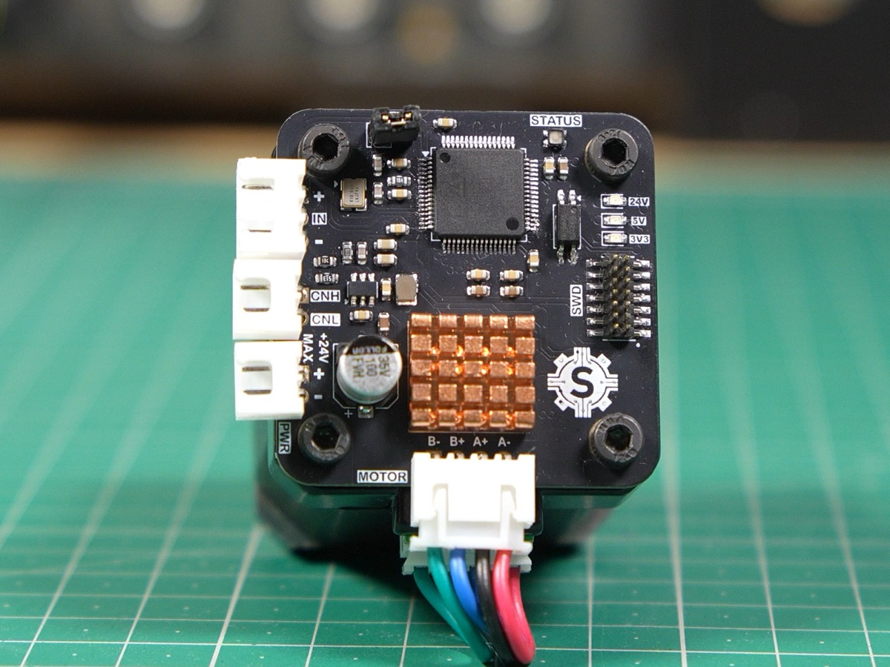
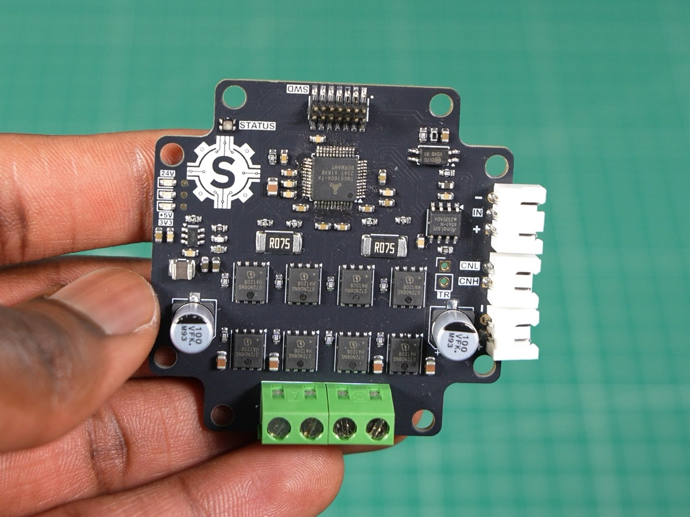
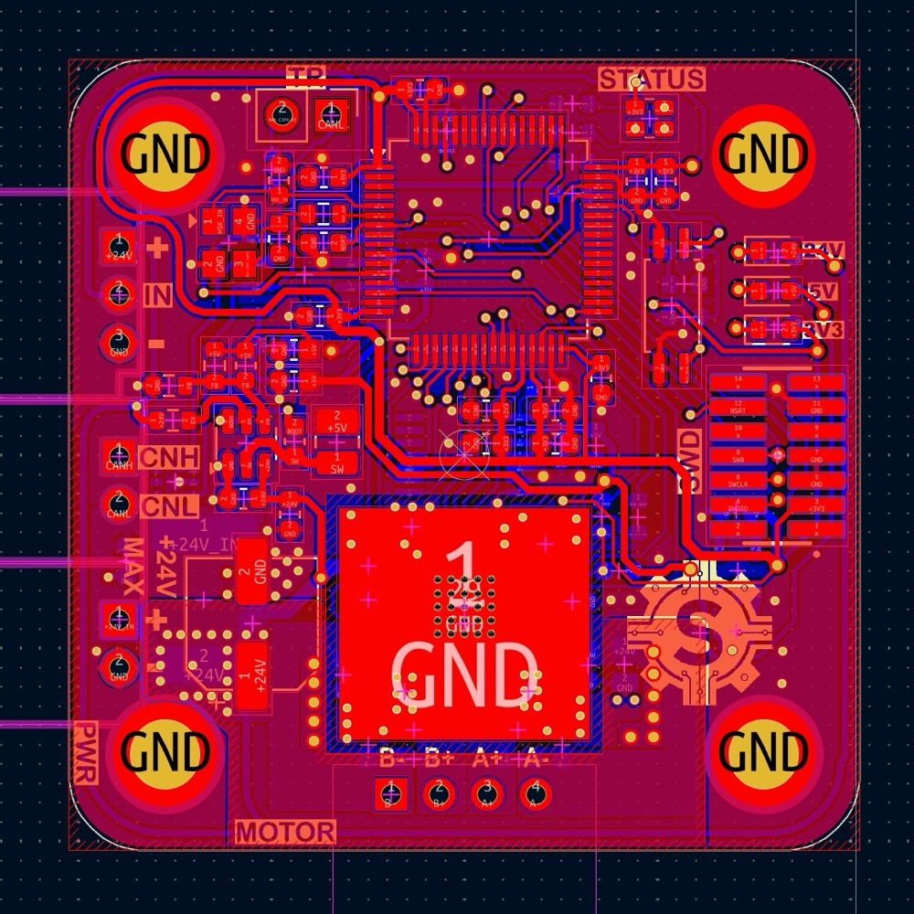
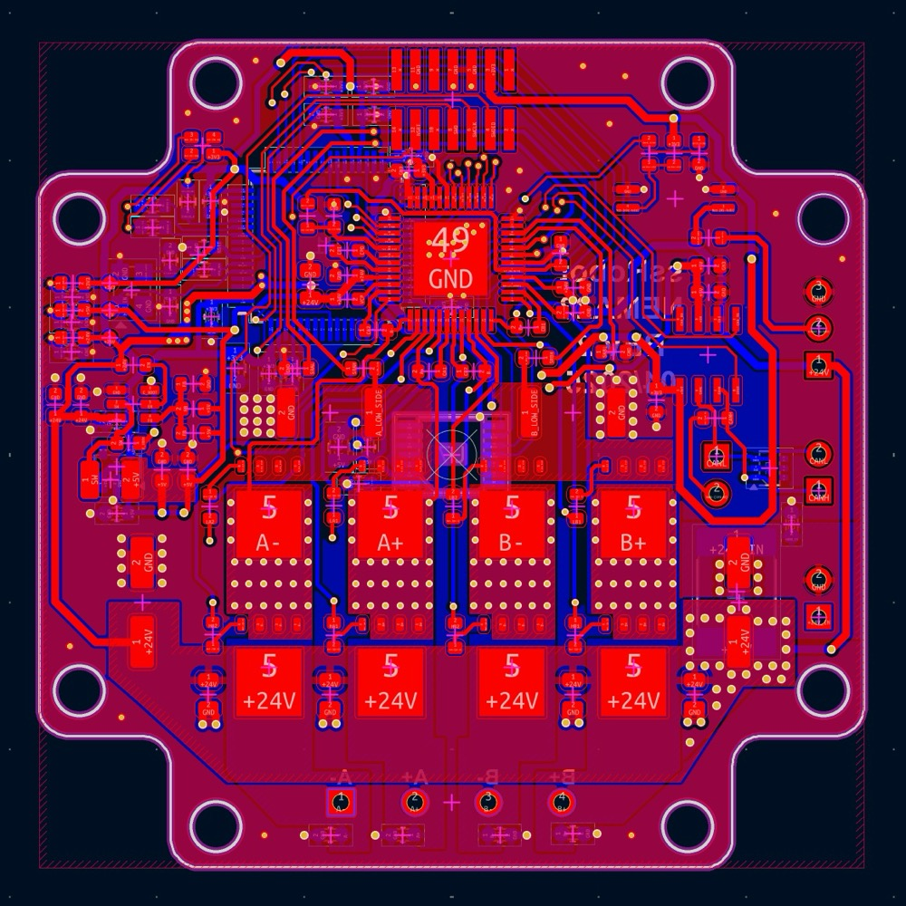
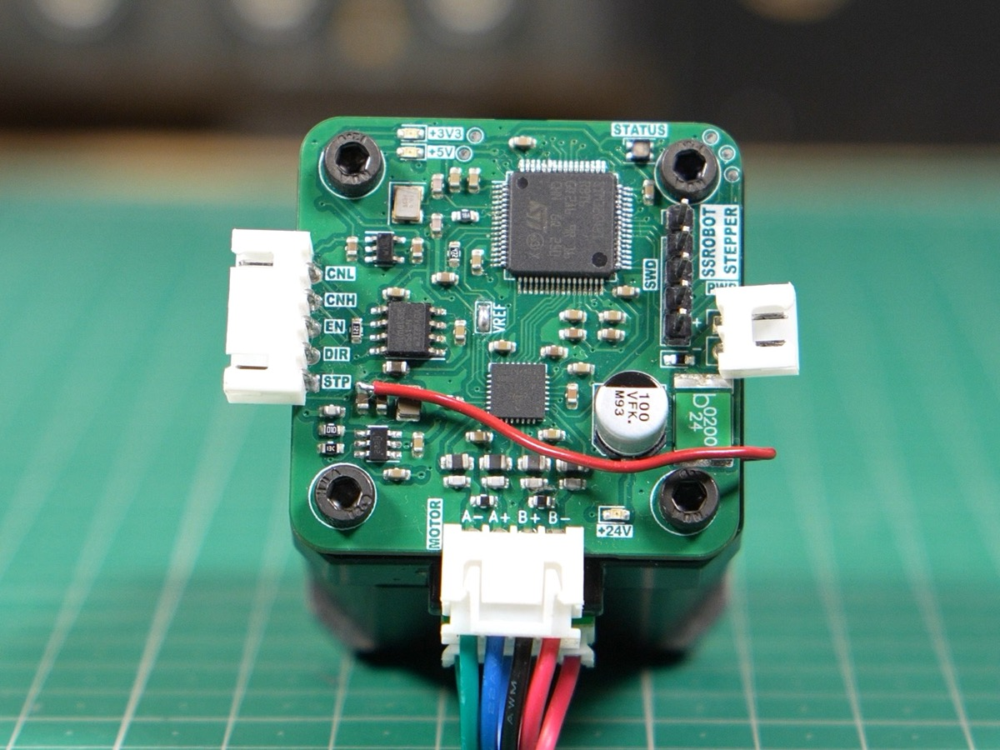
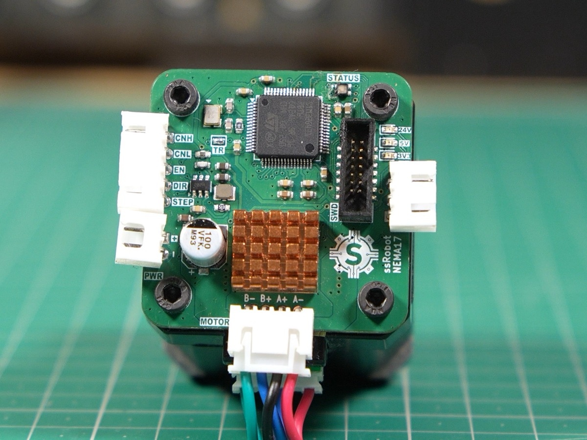
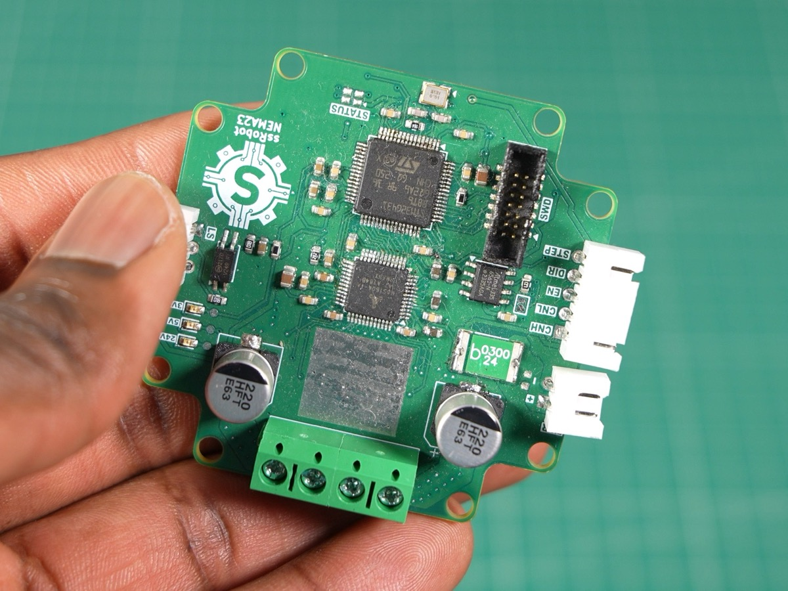

Overview
These are custom stepper motor drivers I built specifically for my 6-DOF robot arm. I designed two drivers: one for NEMA 17 stepper motors and another for NEMA 23s.

NEMA 17 driver (TMC2209)
NEMA 23 driver (TMC5160)Requirements
- Cost less than $25
- Support CAN FD
- Support closed-loop control
Hardware design
Both drivers share the same core design; the only difference is the driver IC.
For the MCU, I chose the STM32G431RBT6. It runs at 170 MHz, which is more than fast enough for step generation and bus communication, and it has CAN FD built in. I included a magnetic encoder so the board supports closed-loop control, but open-loop turned out to be good enough for our robot. I also added optocoupler-isolated inputs for the homing sensors and RGB status LEDs.

NEMA 17
NEMA 23Driver IC selection
For the NEMA 17s, I used the TMC2209 because it doesn’t require any external MOSFETs. However, it’s limited to about 2 A RMS, and our NEMA 23 motors are rated at 3 A, so for those I used the TMC5160. This chip drives external MOSFETs, so I can pick MOSFETs that match my current requirements.
Design evolution
NEMA 17
V1

- Motor control worked
- Magnetic encoder was connected to the wrong supply voltage
V2

- Added heatsink
- Added a proximity sensor input for homing
- Fully functional
V3
- Removed the EN/STEP/DIR breakout header, since the MCU drives the TMC2209 directly
- Made a few changes to the layout
NEMA 23
V1

- Used SOT-23 MOSFETs
- Screw holes were in the wrong positions, so we couldn’t mount it
V2
- Switched from SOT-23 MOSFETs to TDSON-8 (5×6 mm) MOSFETs
- Fixed the screw hole positions
- Works reliably